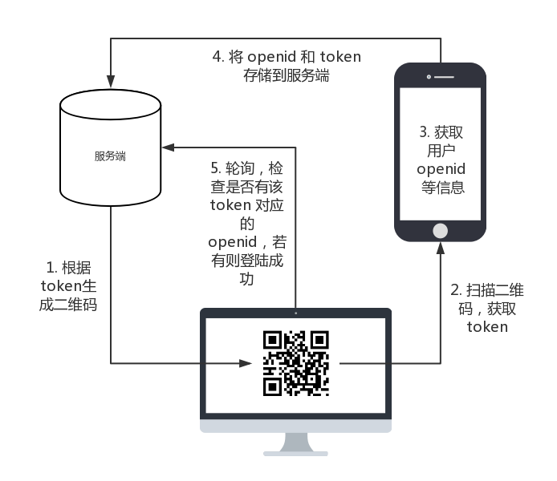

注：文中阐述的方案是一个可以解决问题但不是最优的方案。改进之处在文末。
微信扫码登陆的主要目的有两个，一是方便用户，扫码即可登陆，不需再记忆帐号密码；二是方便开发者，通过微信获取用户，并进行用户身份认证。其中最简单的一种方式是使用 微信开放平台 。但需要 300 元的认证费用。而且如果已有微信公众平台，微信公众平台大部分功能也需要认证才能使用，而且也需要 300 元。所以对于我这种已经认证过微信公众平台，不想再花钱认证开放平台，只能想一个不使用开放平台的办法了，主要还是因为穷。本文就主要详细介绍如何基于微信公众平台实现扫码登陆，并阐述基于 Node.js 的技术方案和代码示例。
1. 场景 🔗
扫码登陆的场景很简单，就是用户首先在电脑的浏览器中打开登陆页面，页面上是一个二维码；然后用户使用微信扫一下页面上的二维码；然后就微信中就提示用户登陆成功了，电脑上的网页就自动跳转到登陆后的页面。
2. 设计方案 🔗
首先熟悉一个微信公众号的几个功能：
- 对于每个微信用户，微信公众平台都有一个唯一的 openid 来标识该用户的身份，不同公众平台 openid 也不一样
- 可以通过 微信网页授权 来获取用户的 openid 和个人信息
基于这些功能，我的方案如下：

接下来详细介绍图中的几个要点。
2.1. 二维码生成 🔗
要扫码登陆，首先就要生成二维码。二维码本质上就是存储数据的图片介质，其中的数据可以是 URL 也可以是文本等。通过二维码扫码工具就能扫出其中的数据。比如扫描上面设计图中的二维码，你就可以得到一段文本。所以基于此原理，我们就可以把 URL 存储在二维码中，微信扫码之后，会自动跳转到该 URL。
上面还提到，微信可以通过授权 URL 获取到用户的 openid，而第三步需要该 openi的，所以我们的 URL 需要是一个授权 URL。
在 node.js 中生成授权 URL 可以借助于 wechat-oauth 这个包。详细步骤如下：
const OAuth = require('wechat-oauth');
const client = new OAuth('wechat_appid', 'wechat_appsecret');
const url = client.getAuthorizeURL('redirectUrl', 'state', 'scope');
其中 redirectUrl 是网页授权回调域名，scope 是网页授权的方式，有 snsapi_base 和 snsapi_userinfo。state 是我们自定义的一个参数，重定向后会带上该参数，所以一般可以用该参数来表示不同的业务。更详细的信息可以参考
微信网页授权
。
这样用户访问该 URL 之后就会被重定向到上面设置的 redirectUrl，并带上 code 参数。在第三步的时候，就可以根据 code 来获取用户的 openid。
然后由于还需要确定是哪个用户在进行登陆，即将微信和电脑浏览器对应起来，所以还需要一个唯一字符串来标识。即在 URL 中加上一个唯一 token，这样微信就能根据该 token 知道是哪一个客户端（浏览器，也就是用户）在进行登陆了。
所以我们可以生成一个 uuid 作为 token。生成 uuid 可以使用
node-uuid
这个包。然后我们可以将 uuid 作为 state 参数来生成授权 URL。
URL 的行使可能就像下面这样：
const url = client.getAuthorizeURL('http://nodejh.com', '985123a0-7e4f-11e7-9022-fb7190c856e4', 'snsapi_base');
console.log(url);
// https://open.weixin.qq.com/connect/oauth2/authorize?appid=wxb8c83c7bd4ac209f&redirect_uri=http%3A%2F%2Fnodejh.com&response_type=code&scope=snsapi_userinfo&state=985123a0-7e4f-11e7-9022-fb7190c856e4#wechat_redirect
最后根据这个带有 token 的 URL 生成一个二维码。生成二维码最简单的方式是使用 qr-image 这个包。
const fs = require('fs');
const qr = require('qr-image');
const qrSvg = qr.image('I love you!', { type: 'png', ec_level: 'H' });
qrSvg.pipe(fs.createWriteStream('qrcode.png'));
这样就会在当前目录下生成一个名为 qrcode.png 的二维码图片。当用户访问该登陆页面的时候，就返回该图片。
同时还需要做的事情是，将生成二维码的 token 也返回给客户端，因为后面还会用到该 token。可以将其放在 cookie 里面，也可以放在隐藏表单。
2.2 扫描二维码，获取 token 🔗
当用户用微信扫描登陆页面的二维码时，就会自动跳转到二维码对应的 URL 上。比如上面的例子，就会跳转到 https://open.weixin.qq.com/connect/oauth2/authorize?appid=wxb8c83c7bd4ac209f&redirect_uri=http%3A%2F%2Fnodejh.com&response_type=code&scope=snsapi_userinfo&state=985123a0-7e4f-11e7-9022-fb7190c856e4#wechat_redirect。
接下来微信浏览器还将继续跳转回调域名，并带上 code 参数，可能跳转之后的页面就是 http://nodejh.com/?code=CODE&state=985123a0-7e4f-11e7-9022-fb7190c856e4。
于是我们就可以自己的后端通过 state 参数中取得 token。
2.3 获取用户 openid 🔗
同时 URL 中还有 code 参数，我们就可以根据 code 来获取到用户的 openid。依旧可以使用
wechat-oauth
。
client.getAccessToken('code', function (err, result) {
var accessToken = result.data.access_token;
var openid = result.data.openid;
});
这样就可以得到 openid 了。
这里获取 token 和 openid 都是在我们自己的服务器中实现的。微信所做的事情就只是扫码获取二维码中的授权 URL，并生成 code 跳转到回调 URL。
有了 openid 我们还可以获取用户信息
client.getUser(openid, function (err, result) {
var userInfo = result;
});
这个时候就可以做一些用户账号绑定的事情了。比如如果数据库里面没有该用户，就将用户信息存入；如果有用户，则可以更新用户微信信息，比如微信昵称或头像，可能改变了。
2.4 存储 token 和 openid 🔗
有了 token 和 openid，我们还需要将其存储，供客户端使用。可以将其存储到数据库里面，也可以存储到缓存。
当用户在客户端打开登陆页面之后，登陆页面就可以带上 token 轮询服务端，判断是否数据库中有该 token 对应的 openid。如果有，则说明用户已经扫码了，登陆成功；如果没有，则说明没有扫码，继续轮询直到有数据。
2.5 轮询 🔗
轮询可以循环发送 HTTP 请求，也可以使用 Web Socket。
当服务端发现用户已经扫码之后，就可以将登陆状态设置为已登陆，如设置 session，然后返回给客户端。客户端发现已登陆成功，则跳转到登陆后的页面。
3. 改进 🔗
上面的设计方案存在的主要题是，二维码是一直有效的。如果考虑到二维码失效怎么处理？
这个时候就可以简单改变一下思路。
前面是扫码的时候，将 token 和 openid 存储到数据库（或别的存储），客户端根据 token 轮询判断是否有数据。
考虑到二维码的实效性，则生成二维码的时候，就先将 token 存储到数据库，并设置一个 token 的过期时间。
当用户使用微信扫码的时候，获取到 token 和 openid。首先根据 token 判断一下数据库中是否有该 token 对应的数据，如果没有则不存储；如果有，则判断是否过期；如果有且 token 未过期，则更新 该 token 对应的 openid。这样就能达到二维码实效性的问题。
4. 总结 🔗
其实文中大部分内容描述的都不是最优的解决方案。是因为自己最开始思考的不够，没想到那么全。当然，改进部分描述的可能也不是最好的方案。但如果没有之前想到的那些，可能更不会想到可以改进的地方，索性就这么在本文中记录了一下。